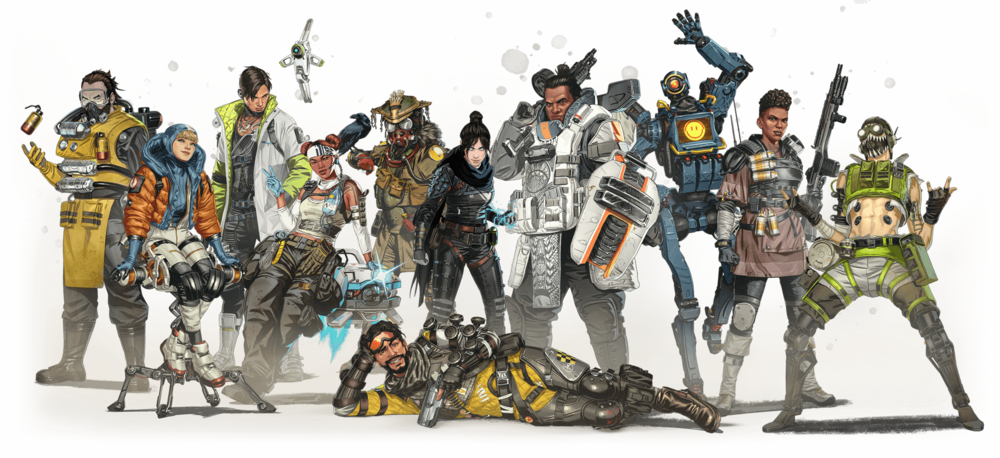

Gaming Fandom - Global authority on games
Top ranked games of decade
Given summary, details of few popular PvP, Battle Royale, Deathmatch games with their officail links(Click on the game heading to view official page).
- Apex Legends :
Apex Legends is an online multiplayer battle royale game featuring squads of three players using pre-made characters with distinctive abilities, called "Legends", similar to those of hero shooters. Alternate modes have been introduced allowing for single and for two-player squads since the game's release. The game is free-to-play and monetized through microtransactions and loot boxes, which allow the player to spend both real money and in-game currency on cosmetic items, such as outfits for the Legends and new colors for weapons.
- Valorant :
Valorant is a team-based first-person hero shooter set in the near future. Players play as one of a set of agents, characters designed based on several countries and cultures around the world. In the main game mode, players are assigned to either the attacking or defending team with each team having five players on it. Agents have unique abilities, each requiring charges, as well as a unique ultimate ability that requires charging through kills, deaths, orbs, or spike actions. Every player starts each round with a "classic" pistol and one or more "signature ability" charges.
- Fortnite :
Fortnite is an online video game developed by Epic Games and released in 2017. It is available in three distinct game mode versions that otherwise share the same general gameplay and game engine: Fortnite: Save the World, a cooperative hybrid-tower defense-shooter-survival game for up to four players to fight off zombie-like creatures and defend objects with traps and fortifications they can build; Fortnite Battle Royale, a free-to-play battle royale game in which up to 100 players fight to be the last person standing; and Fortnite Creative, in which players are given complete freedom to create worlds and battle arenas.
- Call of Duty Warzone :
The Call of Duty Modern Warfare's main campaign centers around a battle against a terrorist organization Al-Qatala. Take control of the CIA operative Alex as you join forces with Captain Price of SAS amd Farah of Urzikstani Liberation Force. Together, you and the joint force successfully thwarts the Al-Qatala's plans and recovers the stolen chemical weapon... at a cost. This event, later sparks the creation of the Task Force 141 under command of Captain Price.
- Hyperscape :
The game's main mode shares elements with other battle royale games, where up to 100 players are dropped on to a map that slowly shrinks over time with players seeking to eliminate the competition. One main difference between Hyper Scape and other popular battle royale games is that in Hyper Scape, insteading of a circle shrinking as the game progresses, random sectors of the map disappear. The game however differs in that once the last sector closes, a crown appears, any player that is able to hold on to the crown for 60 seconds is automatically declared the winner. Alternatively, the game also ends when only one player or team remains. Throughout the game, players can find both weapons as well as special abilities known as "Hacks," such as letting the player transform into a giant ball from which they can bounce around, or letting them become invisible. Players can only have two weapons and hacks available at a time, although each item can be swapped out during a round.
